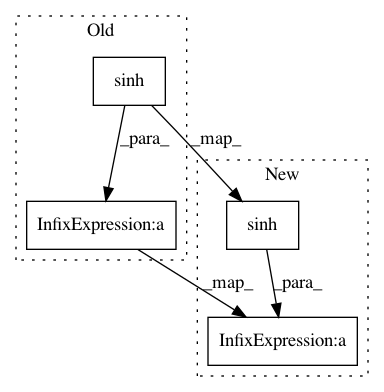

534cf031b3f705da36f8551faa9ff47c7d0cbf8e,geomstats/hyperbolic_space.py,HyperbolicMetric,log,#HyperbolicMetric#Any#Any#,207
Before Change
+ INV_TANH_TAYLOR_COEFFS[5] * angle[mask_0] ** 6
+ INV_TANH_TAYLOR_COEFFS[7] * angle[mask_0] ** 8)
coef_1[mask_else] = angle[mask_else] / gs.sinh(angle[mask_else])
coef_2[mask_else] = angle[mask_else] / gs.tanh(angle[mask_else])
log = (gs.einsum("ni,nj->nj", coef_1, point)
- gs.einsum("ni,nj->nj", coef_2, base_point))
After Change
// This avoids dividing by 0.
angle += mask_0_float * 1.
coef_1 += mask_else_float * (angle / gs.sinh(angle))
coef_2 += mask_else_float * (angle / gs.tanh(angle))
log = (gs.einsum("ni,nj->nj", coef_1, point)
- gs.einsum("ni,nj->nj", coef_2, base_point))
In pattern: SUPERPATTERN
Frequency: 3
Non-data size: 4
Instances
Project Name: geomstats/geomstats
Commit Name: 534cf031b3f705da36f8551faa9ff47c7d0cbf8e
Time: 2018-09-26
Author: claire.donnat@gmail.com
File Name: geomstats/hyperbolic_space.py
Class Name: HyperbolicMetric
Method Name: log
Project Name: apache/incubator-tvm
Commit Name: 28057b86600d323117d929ed21bd716ae557b79e
Time: 2020-05-10
Author: siju.samuel@huawei.com
File Name: python/tvm/relay/op/_tensor_grad.py
Class Name:
Method Name: cosh_grad
Project Name: geomstats/geomstats
Commit Name: 534cf031b3f705da36f8551faa9ff47c7d0cbf8e
Time: 2018-09-26
Author: claire.donnat@gmail.com
File Name: geomstats/hyperbolic_space.py
Class Name: HyperbolicMetric
Method Name: exp